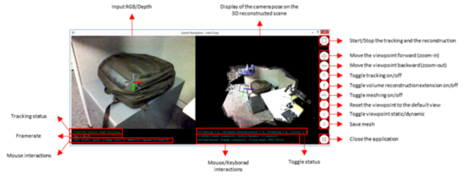

Sample: RF_ScenePerception |
Top Previous Next |
|
The RF_ScenePerception sample illustrates the capability of the SDK Scene Perception module. Build & Execute Use the prebuilt binary under $(RSSDK_DIR)/bin/$(Platform) or re-build the sample using one of the solution files under $(RSSDK_DIR)/sample/RF_ScenePerception directory. The sample supports Microsoft* Visual Studio* 2012 or 2013. Operations When running the sample application, the camera needs to be oriented to some scene between 0.5-2.0 meters in front of the camera. Best scenes are indoor scenes such as a table top or a desk with enough structures/textures etc. Scenes with only flat unicolor walls or reflective materials (screens) or full of black objects do not reflect the emitted IR light, and therefore do not work well. The sample application displays the input RGB or depth and shows the estimated camera pose and the reconstruction result of the scene as a mesh representation of the surface or a projected (ray-casted) view of the volume space. While moving the camera the relative camera/scene pose is estimated and displayed as a rectangle and a coordinate system representing the camera position and orientation. The user can change the viewpoint to examine the reconstructed volume and enable/disable some features like meshing the volume or extending the volume. The user can also save the reconstructed volume as mesh in an OBJ file. The GUI of the sample application is similar to Figure 157. The live view pane is on the left. Right clicking the mouse button on it (or use the keyboard shortcut "i") changes the image view from color to depth. The 3D reconstructed scene pane is on the right. Use the mouse interaction (or the keyboard arrow keys) to change the viewpoint: left button for rotation, right button for translation, and middle button for zoom.  Figure 157: The Scene Perception Sample Window Click on the right side GUI buttons for the following operations (from top to bottom):
|